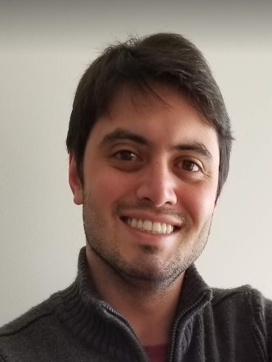

Sérgio Fleury Dias Filho
Formando em Engenharia Mecânica na Unicamp, com MBA em gestão empresarial na FGV, atuei por 9 anos como engenheiro de desenvolvimento de processos na Embraer. Em 2021 resolvi realizar uma transição de carreira e comecei a estudar programação web. Em maio de 2022 iniciei o programa Top Coders, uma parceira do banco Safra com a Let's Code (hoje ADA), que possibilitou a realização dessa transição.